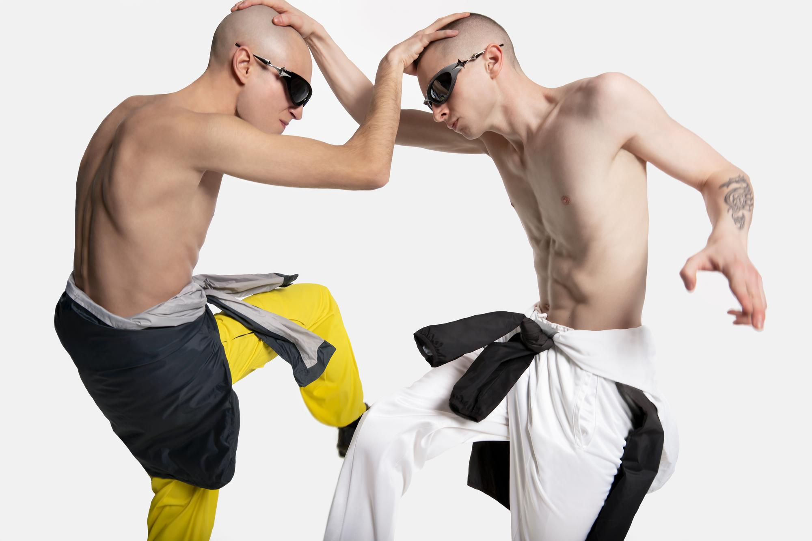
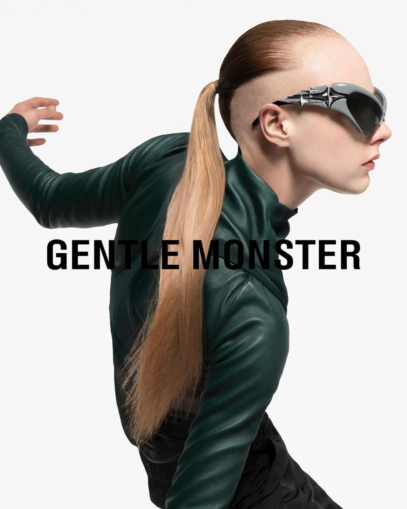
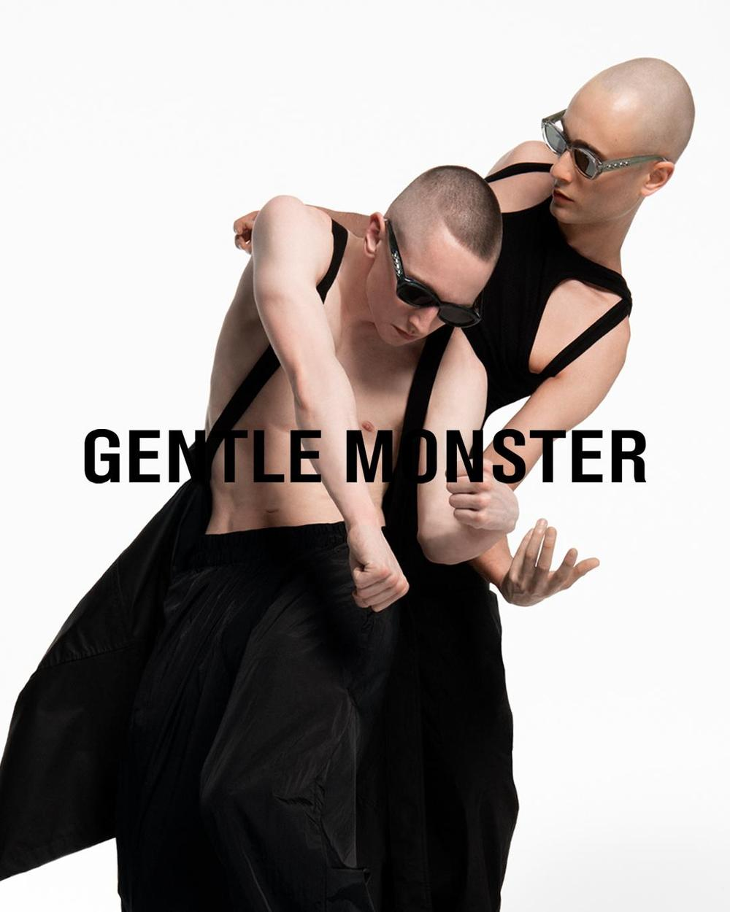
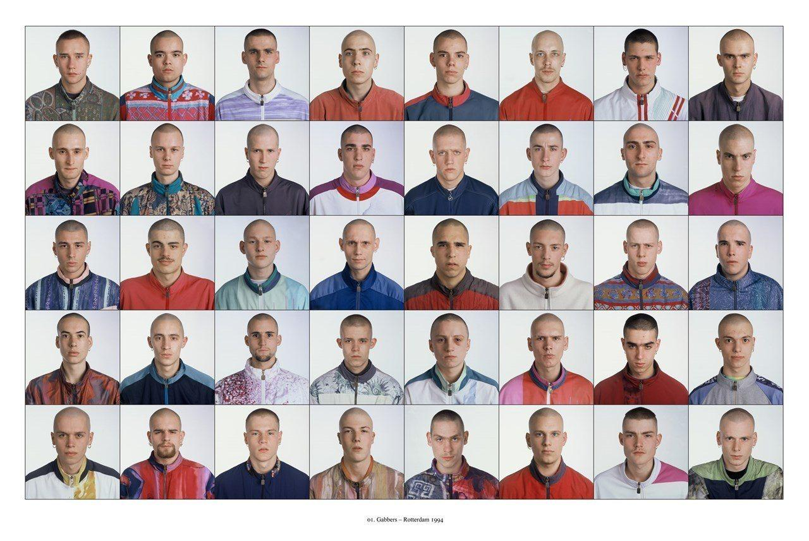
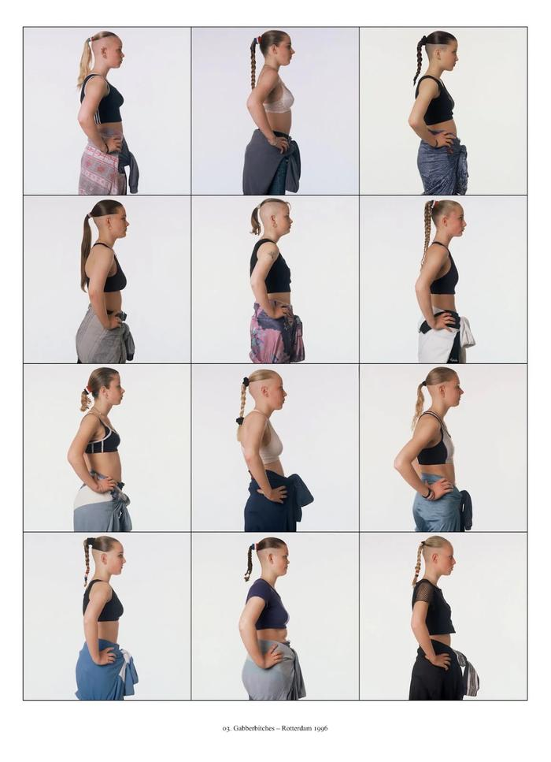

Role Digital Contents Creative, Art direction, Video Editing, Post production Year 2023Participated in the creative direction for the Bold 2.0 collection, drawing inspiration from the 1990s Gabber rave subculture. Planned the collaboration with photographer Ari Versluis, renowned for documenting Gabber culture, to produce campaign imagery and video assets. Directly executed video editing and color grading. By shifting the target focus from the traditional Asian market to a European audience, the campaign successfully captured a new potential customer base.

Photographer & Director : Ari versluis
Digital Creative Director: Pyo Ahn, Soojin Lee, Hyunijn Kim, Jihyung Kim
Video editing, Color by Hyunjin Kim
Soundtrack by @Gabber eleganza




Original archive by Ari versluis & Ellie uyttenbroek <Exactitudes>, 1994
Bold 2.0 popup store - Seoul, KR